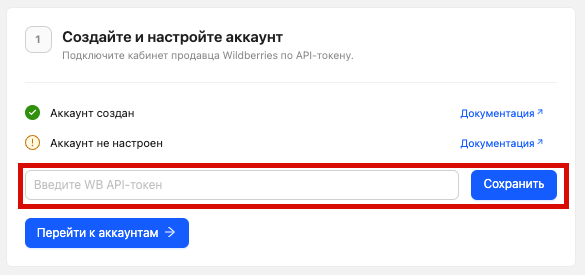
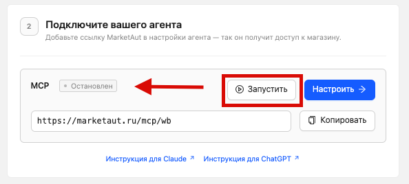
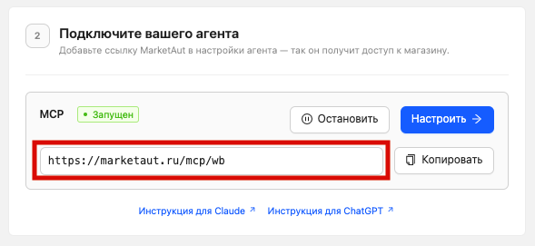
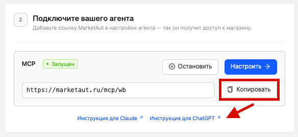
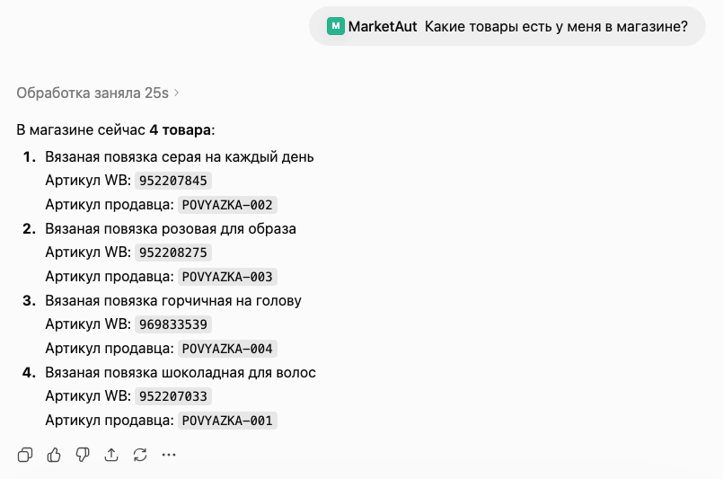

Руководство: быстрый старт
Это руководство поможет подключить магазин Wildberries к ChatGPT и начать использовать возможности ИИ для работы с вашим магазином.
Все примеры, приведённые ниже, предполагают, что вы уже зарегистрировались и вошли на платформу.
Если вы еще не зарегистрировались или не выполнили вход, следуйте инструкциям из раздела Регистрация
После регистрации в MarketAut первый Аккаунт и первая Диаграмма создаются автоматически.
Вам не нужно создавать их вручную — достаточно получить API-токен Wildberries, добавить его в аккаунт, запустить агента и подключить ChatGPT.
Что потребуется
Перед началом убедитесь, что у вас есть:
- учетная запись MarketAut;
- учетная запись ChatGPT;
- доступ к личному кабинету продавца Wildberries.
Получение API-токена Wildberries
Любая интеграция с Wildberries начинается с создания API-токена. Он позволяет получать данные из магазина Wildberries и выполнять действия от его имени.
Подробнее об интеграции с Wildberries см. в разделе Типы аккаунтов.
⚠️ ВАЖНО: для создания токена вы должны быть владельцем личного кабинета Wildberries.
Перейдите на Портал продавца Wildberries и откройте раздел Интеграции по API.
Нажмите + Создать токен.
В открывшемся окне выберите Для интеграции вручную, затем — Базовый токен.
Укажите любое удобное для вас название токена и выберите разделы, к которым он будет иметь доступ.
Для работы всех функций MarketAut необходимо выбрать:
- Контент
- Цены и скидки
- Документы
После выбора разделов нажмите Создать токен и скопируйте полученный токен в буфер обмена (Ctrl+C или Command+C) — он понадобится на следующем шаге.

Подробнее о получении API-токена см. в разделе Получение API-токена.
Настройка аккаунта MarketAut
После получения API-токена необходимо добавить его в MarketAut.
Откройте главную страницу MarketAut.
В блоке «Создайте и настройте аккаунт» вставьте полученный API-токен в соответствующее поле и нажмите «Сохранить».

После сохранения аккаунт будет готов к работе.
Подробнее об аккаунтах см. в разделе Аккаунты.
Запуск диаграммы для ИИ-агента
После настройки аккаунта необходимо запустить агента.
В блоке «Подключите вашего агента» нажмите «Запустить», если агент еще не запущен.

После запуска статус агента изменится на «Запущен».
Подробнее о диаграммах см. в разделах Диаграммы и Настройка диаграммы.
Подключение ChatGPT
После настройки аккаунта и запуска агента подключите MarketAut к ChatGPT.
Подробнее о процессах подключения можно прочитать в разделе Работа с ИИ.
В данном руководстве мы не будем подробно рассматривать процесс подключения, так как он описан в отдельном разделе.
⚠️ ВАЖНО — для подключения ChatGPT (или любого другого ИИ с поддержкой MCP) потребуется адрес подключения к MCP.
Этот адрес формируется на основе значения ID, указанного при настройке узла MCP.
Например, если в поле ID было указано значение wb, то адрес подключения будет следующим:
https://marketaut.ru/mcp/wb
Если указано другое значение, адрес подключения будет отличаться.
Текущий адрес подключения всегда можно посмотреть на домашней странице.

На главной странице MarketAut в блоке «Подключите вашего агента» нажмите «Копировать», чтобы скопировать адрес подключения.

Далее выполните следующие действия в ChatGPT:
1. Перейдите в раздел «Плагины»;
2. Нажмите кнопку «+» в правом верхнем углу;
3. Введите название приложения, например MarketAut;
4. Вставьте скопированный адрес подключения;
5. Подтвердите согласие и нажмите «Создать приложение»;
6. Обновите список инструментов и дождитесь появления приложения MarketAut;
Подробнее о подключении см. в разделе Подключение ChatGPT.
Проверка подключения
- Откройте новый чат;
- Нажмите «+» рядом с полем ввода сообщения;
- Выберите приложение MarketAut. После этого ChatGPT будет готов к работе с вашим магазином Wildberries.
Чтобы убедиться, что всё работает корректно задайте ИИ любой вопрос о товарах вашего магазина, например:
Какие товары есть у меня в магазине?

Подключение завершено.